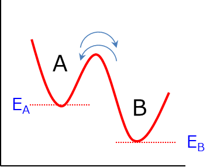

化学平衡論
化学平衡論について，基質濃度と存在確率との関係について考えていきます．
一次の化学平衡
単純な一次の化学平衡において，
\( \Large \hspace{15 pt} \ce{A <=>C[ k_{AB} ][k_{BA}]B} \)
を考えます．A状態とB状態は平衡状態にあり，各々行き来しながらそれぞれの滞在割合は一定であると言えます．
それぞれのエネルギー状態は，EA, EBである．ここで，EA＞EB，とします．

各状態の存在比がボルツマン分布に従うとして，それぞれの存在確率は，
\( \Large \displaystyle P_A \propto exp \left[ - \frac{E_A}{k_B T} \right] \)
\( \Large \displaystyle P_B \propto exp \left[ - \frac{E_B}{k_B T} \right] \)
その比は，
\( \Large \displaystyle \frac{P_A}{P_B} = exp \left[ - \frac{E_A - E_B}{k_B T} \right] = exp \left[ - \frac{\Delta E}{k_B T} \right]\)
となります．ここで，前提として，EA＞EB，なので，ΔE>0，となります．つまり，
\( \Large \displaystyle \frac{P_A}{P_B} < 1 \rightarrow P_A < P_B \)
となります．エネルギー状態が低いほうが存在確率が大きいのは納得できます．
この場合の平衡は，
\( \Large k_{BA} \cdot P_A = k_{AB} \cdot P_B \)
となるので，平衡定数Kを使って，
\( \Large K \equiv \frac{k_{BA}}{k_{AB}} = \frac{ P_B}{ P_A } \)
となります（平衡状態においてKの定義が上記でいいのか，その逆数がいいのかは，よく知らないです）
ここで，A， Bという二状態のみ考えているので，保存則より，
\( \Large P_A + P_B = 1\)
が成り立つので，
\( \Large \displaystyle P_A + \frac{P_A}{K} = 1\)
\( \Large \displaystyle P_A \left( 1+ \frac{1}{K} \right) = 1\)
\( \Large \displaystyle P_A =\frac{1}{1+K} = \frac{K}{1+K} \)
\( \Large \displaystyle P_B = \frac{1}{1+K} \)
が成り立ちます．
次に，基質が結合する反応を考えます．